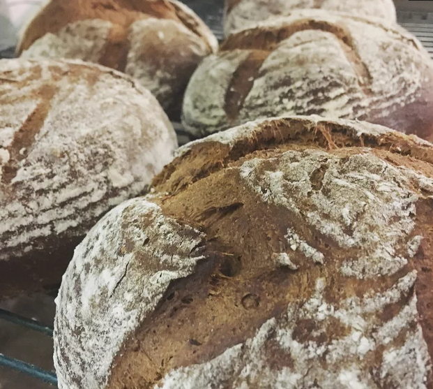

Homemade Bread

Description
Wonderful dark bread.
Ingredients
- 1 ½ teaspoons caraway seeds
- 1 ½ teaspoons fennel seeds
- 1 ½ teaspoons anise seeds
- 1 ¼ cups whole milk
- ¼ cup butter, cut into cubes
- ¼ cup molasses
- 3 ½ teaspoons active dry yeast
- 2 cups all-purpose flour, or more as needed
- 1 cup rye flour
- 1 ½ teaspoons sea salt
- 1 teaspoon orange zest
Steps
- Combine caraway seeds, fennel seeds, and anise seeds in a spice grinder; pulse until coarsely ground.
- Heat milk and butter in a deep saucepan, stirring occasionally, until butter melts and milk comes to a bare simmer, about 5 minutes. Remove from heat and cool until milk registers 100 degrees F (38 degrees C) on an instant-read thermometer.
- Stir molasses and yeast into the milk mixture. Let stand until yeast is foamy, about 5 minutes. Add 2 cups all-purpose flour, rye flour, sea salt, and orange zest; stir until dough forms a shaggy mass. Knead in the saucepan, adding more flour if needed, until dough is no longer sticky, 5 to 7 minutes.
- Turn dough out on a floured surface. Knead, adding more flour if needed, until smooth and springy, about 7 minutes.
- Place dough in a large greased bowl, turning to coat. Cover with a damp kitchen towel or piece of plastic wrap. Let rise in a warm area until somewhat puffy, about 1 hour.
- Line a baking sheet with parchment paper. Place dough on the baking sheet. Cover lightly with the towel or plastic wrap. Let rise until puffy, about 1 hour 30 minutes.
- Preheat oven to 350 degrees F (175 degrees C).
- Bake in the preheated oven until browned, 35 to 40 minutes. Bread will sound hollow when tapped on the bottom.
Back